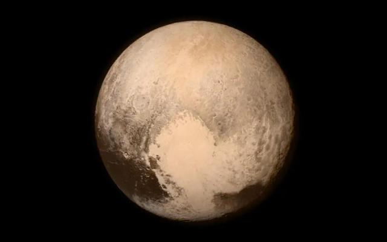
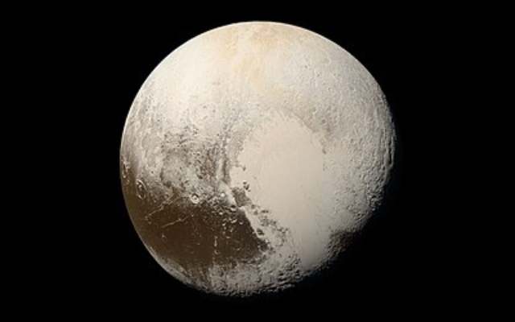
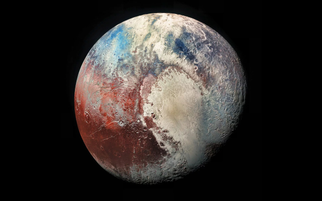

Pluto
Pluto, formerly the ninth-most planet from the Sun, is a dwarf planet that resides in the Kuiper belt.
Information

| Property | Value |
|---|---|
| Mass (1024 kg) | 0.01303 |
| Volume (1010 km3) | 0.702 |
| Mean Density (kg/m3) | 1854 |
| Surface Area | 16.647 million km2 |
| Average Temperature | ~41 K (-232 C) |
| Wind Speeds | N/A |
About Pluto


Pluto, formerly the ninth-most planet from the Sun, is a dwarf planet that resides in the Kuiper belt. It is the largest known "trans-Neptunian" (beyond Neptune) object by volume, although it is a close margin, with the second largest in volume being Eris, another dwarf planet. Pluto is comprised primarily of ice and rock, and it is much smaller than the inner planets. Pluto has 5 known natural satellites, those being Charon, Nix, Hydra, Styx, and Kerberos.